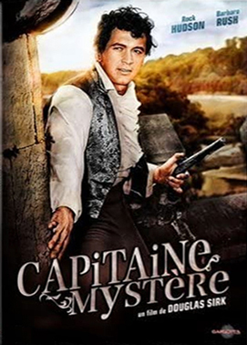
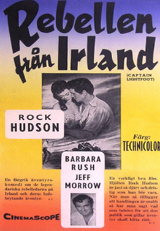
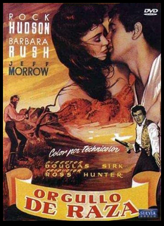

Captain Lightfoot
Philip O'Flynn
SYNOPSIS
The movie is set in the early 19th century with the hero and his brother-in-arms becoming highwaymen, robbing the wealthy around the foothills of Dublin, Ireland. Captain Lightfoot falls in love, and the ensuing drama threatens everyone's safety.
In 1815, Michael Martin, member of an Irish revolutionary society, turns highwayman to support it, and soon becomes an outlaw. In Dublin, he meets famous rebel "Captain Thunderbolt" and becomes his second-in-command, under the name "Lightfoot".
A Hollywood adaptation of a book by W. R. Burnett written in 1954.
The movie was filmed around Clogherhead, County Louth, and in the Powerscourt Estate in Enniskerry, County Wicklow.
A colourful, light adventure that plays like a classic swashbuckler, this Ross Hunter production Captain Lightfoot, is entertaining Hollywood hokum from a screenplay which was loosely based on Irish history. The casting of Rock Hudson as Mike Martin, aka Captain Lightfoot, undercuts any pretense to historical accuracy, despite a supporting cast of Irish players. Although hired more for his looks and marquee value, than his aptness for the role, Hudson nevertheless is amiable, and he attempts a slight brogue that gets slighter as the film progresses. While his good-natured performance is an asset to the movie, Hudson lacks the confidence and bravado that a Burt Lancaster would have brought to the part.
Barbara Rush provides the requisite love interest as Aga, although the predictable romance between her and Hudson is of the clichéd "hate at first sight" variety, and viewers know the outcome from the first scene. Jeff Morrow, who plays Aga's father, Doherty, arguably gives the film's best performance; he is strong, authoritative, and convincing as a rebel leader. The film's technical credits are also good. Shot on location in Ireland, the scenery is lush and beautiful, and the music, supervised by Joseph Gershenson, is rousing. While undemanding fun, the movie does not rise to memorable, despite the presence of a young Rock Hudson at the cusp of stardom. For Hudson fans, the film is essential viewing, for others, light escapist fun.


